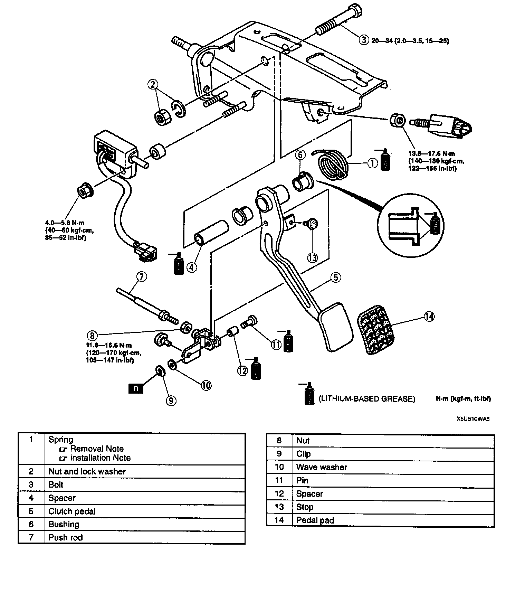
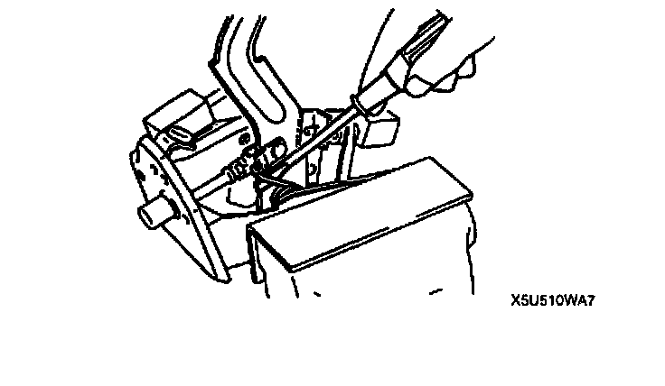
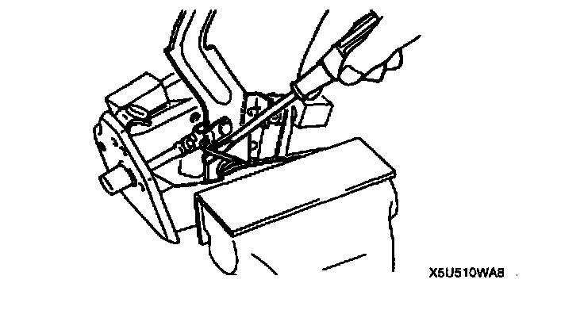

Clutch Pedal Assembly: Service and Repair
CLUTCH PEDAL REMOVAL/INSTALLATION1. Disconnect the negative battery cable.

2. Remove in the order indicated in the table.
3. Install in the reverse order of removal.
Spring Removal Note
1. Place the clutch pedal component in a vise.

2. Pry the spring off the clutch pedal as shown in the finders.
Spring Installation Note
1. Place the clutch pedal component in a vise.

2. Install the spring onto the clutch pedal as shown in the figure.
3. Adjust the clutch pedal height and free play after installation.